6. Connect the Case Cables to the Motherboard
You'll need steady hands and patience for this step. All the cables we're going to install now are part of the PC chassis. These vary from case to case, but a few are universal: the cables for your front-panel USB ports, the front-panel audio jack or jacks, and the case's switches and LEDs.
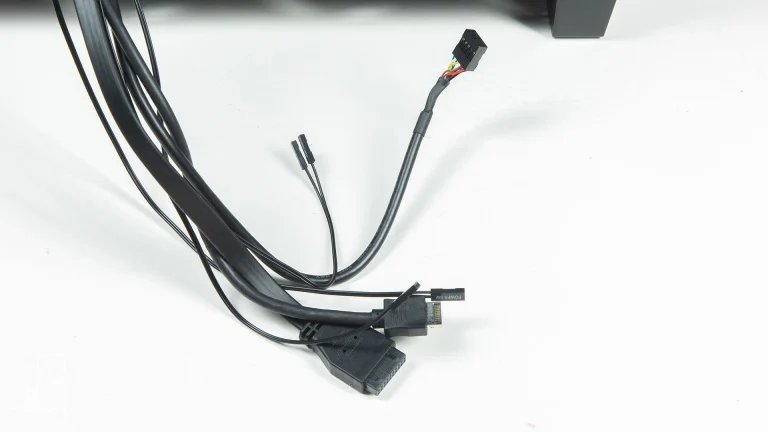
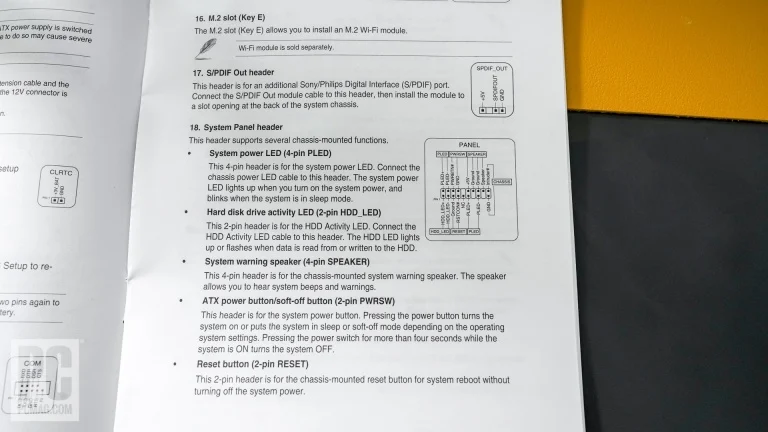
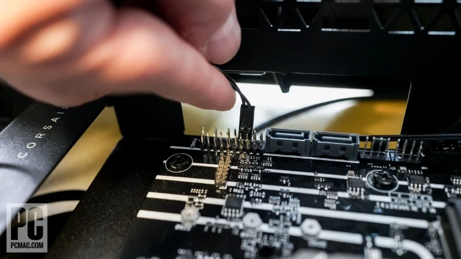
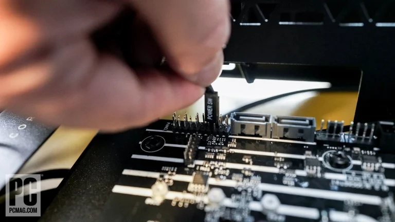
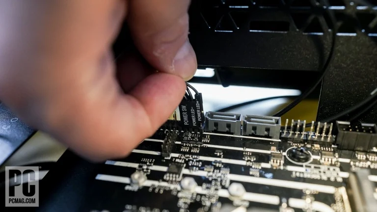
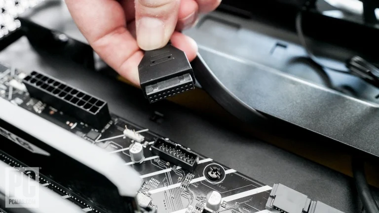
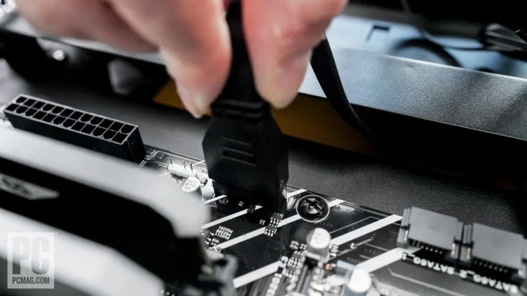
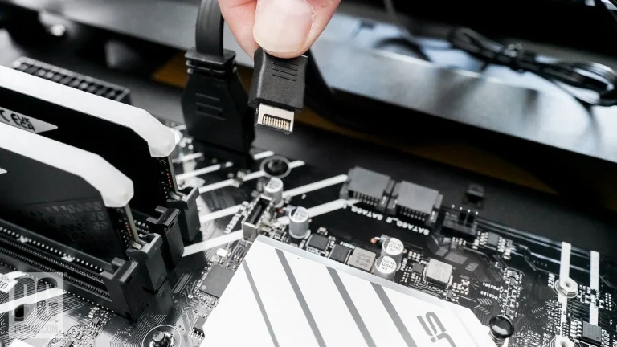
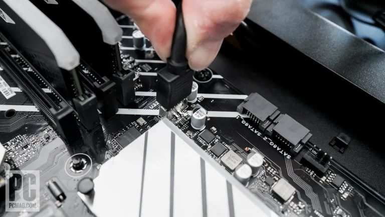
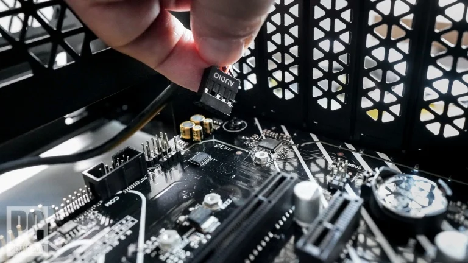
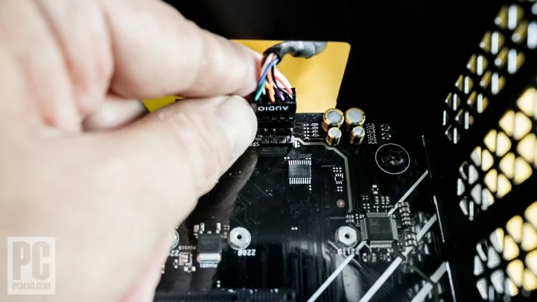
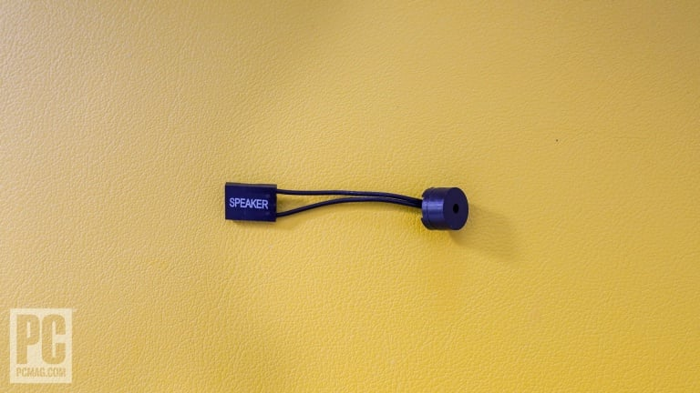